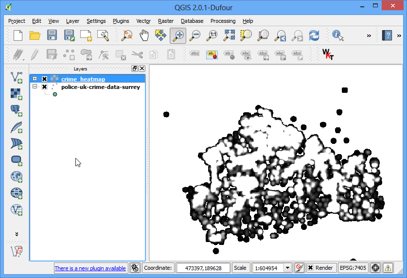
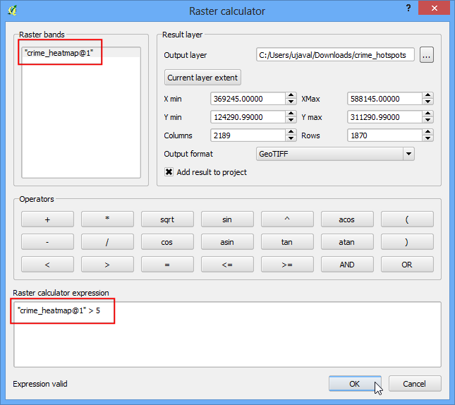

Создание тепловых карт
[ Download PDF A4 Letter ]
Тепловые карты - один из лучших инструментов визуализации для скоплений точечных данных. Теплокарты используются, чтобы легко идентифицировать кластеры, где есть высокая концентрация деятельности. Они также полезны для выполнения кластерного анализа или анализа горячих точек.
Обзор задачи
Мы будем работать с набором данных о местоположениях преступлений в графстве Суррей, Великобритания за 2011 год, и найдем горячие точки преступности в округе.
Получение данных
Лондонское хранилище данных предоставляет исходные данные с веб-сайта Police.uk, отображающего преступления на карте <http://data.london.gov.uk/datastore/package/policeuk-crime-data> _.
Загрузите данные из графства Суррей.
For convenience, you can directly download the sample data used in this
tutorial from link below.
police-uk-crime-data-surrey.zip
Методика
Для начинания, расстегивают данные к папке. Data находится в формате CSV. Мы импортируем это data в QGIS. (посмотрите Импорт таблиц или CSV-файлов. для более конкретной информации). Щелкните Text.

Рассматривайте к файлу Police-uk-crime-data-surrey.txt на вашем компьютере и открывайте это. Выберите CSV (запятая отделенные значения) как формат файла. Вы будете видеть, что Easting и Northing колонки автоматически выбрали, как X и поля Y. Убедитесь, что вы проверяете Use пространственный индексный выбор, так как это будет развивать скорость ваши действия над этим слоем. Щелкните OK.

Вы, возможно, видите некоторые ошибки. Вы можете пренебречь теми с целью из этого консультации. Щелкните Close.

Потом, вам нужно выбрать Систему Координатной Ссылки (CRS). Если вы читаете описание данных, вы заметите, что пространственная ссылка для данных - British Соотечественник Grid. Выберите OSGB 1936 / Британская Национальная Решетка как CRS. Щелкните OK.

Сейчас вы будете видеть данные загруженными в QGIS.

Zoom-in немного поближе, чтобы получить лучший взгляд на данные. Вы заметите, что data абсолютно плотный и трудно получить идею того, где есть высокая концентрация пунктов. Это, где heatmap станет удобным.

Чтобы создать heatmap, вам нужно разрешить основное дополнение к программе, названное Heatmap. Посмотрите Использование модулей расширения чтобы знать, как разрешить встроенные дополнения к программе. Как только вы разрешили дополнение к программе, идут к .

В Heatmap Вставной диалог, выбирают crime_heatmap как имя Output растр. Введите 1000 единиц карты как Radius. Радиус - область вокруг каждого пункта, который будет использоваться, чтобы вычислить Тепло, который пиксель получил. Проверьте Advanced так мы можем конкретизировать output размер нашего heatmap. Введите 100 как Cell Размер X и Cell Размер Y. Щелкните OK.

Как только обработка закончена, вы будете видеть, что grayscale heatmap загрузился в холсте.

Давайте вынуждать наш heatmap напоминать больше традиционный heatmap, который вы часто видите. Щелкните правой кнопкой по heatmap слою и щелканию : guilabel:Свойства.

В Style таблица, выбирают Singleband pseudocolor как Render тип. Потом, согласно разделу Load min/максимум значения, выбирают Actual (медленнее) как Accuracy и щелкают Load. Это просмотрит heatmap и найдет значения минимального и максимального пикселя. Эти значения будут использоваться, чтобы производить соответствующую цветную наклонную плоскость. В секции Generate новая цветная карта, выбирают YlOrRd (Красный для Yellow-orange) как цветная наклонная плоскость, и щелкают Classify. Щелкните OK.

Сейчас вы будете видеть больше привлекательной heatmap-like передачи слоя. Вы можете выбрать Identify инструмент и щелкают по любому пикселю heatmap. Вы будете видеть значение пикселя в результирующем pop-up. Это значение пикселя - мероприятие скольких пунктов от исходного слоя содержатся в пределах указанного радиуса ( в нашем случае - 1000m) вокруг пикселя.

Сейчас вы имеете свой heatmap. Это полезно для визуальной интерпретации, но не очень полезный, если вы хотите использовать эти результаты в анализе. Много раз, вы хотите идентифицировать Горячие точки, где там высококонцентрационный от пунктов. Мы будем сейчас пробовать идентифицировать такие горячие точки, используя это heatmap. Идите к –> Растра.

Вам придется выбрать пороговое значение сначала. Выше этого порога полагается, что все значения пикселя есть в кластере. Давайте использовать значение 5 для этого data. В Raster диалог калькулятора, называют output слой как crime_hotspots. Щелкните дважды на crime_heatmap@1 под Raster секция групп и это будет добавлено Raster выражение калькулятора textarea. Завершите выражение, как “crime_heatmap@1” > 5. Проверьте коробку рядом с Add кончитесь, чтобы проектировать и OK.

Новый слой будет добавлен QGIS. Этот слой имеет пиксели со значениями или 0, или 1. Все пиксели во входном слое, где значение пикселя было больше, чем 5 сейчас имеют значение 1 и все remianing пиксели составляют 0. Щелкните по .

Назовите выходной файл как crime_hotspots_vector. Проверьте коробку рядом с Field имя также как и Load в холсте, когда закончено. Щелкните OK.

Однажды конверсионные окончания, вы будете иметь все же другой слой добавил QGIS. Это векторное представление кластеров, которые были созданы в предыдущем шаге. Слои содержат кластеры как 0, так и 1 значение. Позвольте нам filter 0 значений, так мы получаем кластеры горячих точек. Щелкните правой кнопкой по слою и выберите Open Припишите Таблицу.

В Свойство стол, щелкают по Select изображайте использование выражения.

Введите выражение, как “ОТЛИЧИТЕЛЬНОЕ ИМЯ” = 1 и щелкают Выберите. Потом, щелкните по Близко.

В главном окне QGIS, вы будете видеть некоторые особенности выделенными в yellow. Они - особенности, которые соответствовали нашему запросу. Щелкните правой кнопкой по слою и выберите Save Выделение, Как....

Назовите output слой как crime_clusters. Проверьте коробку рядом с Add сохраненный файл, чтобы нанести на карту и щелкнуть OK.

Там вы имеете это. Заключительный слой содержит Горячие точки, извлеченный от heatmap. Эти кластеры - intelligence, собранный от необработанных данных, и может обеспечить полезные интуиции также как и служить входом для дальнейшего действия.